NASA Space Apps 2026 · NISAR · Informe de cambios
Amazonía peruana · Marañón y Huallaga
2026-10-05 → 2026-10-17 · pista 83, frame 91 · umbral ±3 dB · agua < -15 dB
1. Resumen
Entre el 2026-10-05 y el 2026-10-17 (12 días) se han comparado 60 310 km² con datos válidos en las dos fechas (pista 83, frame 91, órbita descendente), con el radar NISAR en banda L, polarización HH, a 20 m.
Antes de comparar se ha quitado un desplazamiento global de +1,03 dB, que afecta a toda la escena por igual (humedad general o calibración). Después, el 0,07 % del área (39,4 km²) cambia más de ±3,0 dB. Agrupado, eso da 10 zonas de al menos 0,05 km² que suman 38,5 km².
La clase con más superficie es «Agua nueva» (17,3 km², 1 zona). Superficie que pasa a reflejar como agua lisa: posible inundación o crecida.
La zona más grande (z001) es de tipo «Agua nueva»: 17,31 km² con un cambio medio de −17,7 dB (de −4,9 a −21,6 dB), centrada en -4.9932, -75.9904. Confianza alta.
La superficie con aspecto de agua pasa de 760,1 a 689,1 km² (−71,0 km²): 17,4 km² se vuelven agua y 88,4 km² dejan de serlo.
La correlación entre las dos imágenes es 0,97, es decir, son muy parecidas: la mayor parte de la escena no cambia.
AVISO: la segunda fecha de este par es simulada; los cambios se han inyectado a propósito para validar el método.
Un cambio de radar es una señal, no una prueba: conviene contrastarlo con imagen óptica o conocimiento del terreno.
2. Imágenes
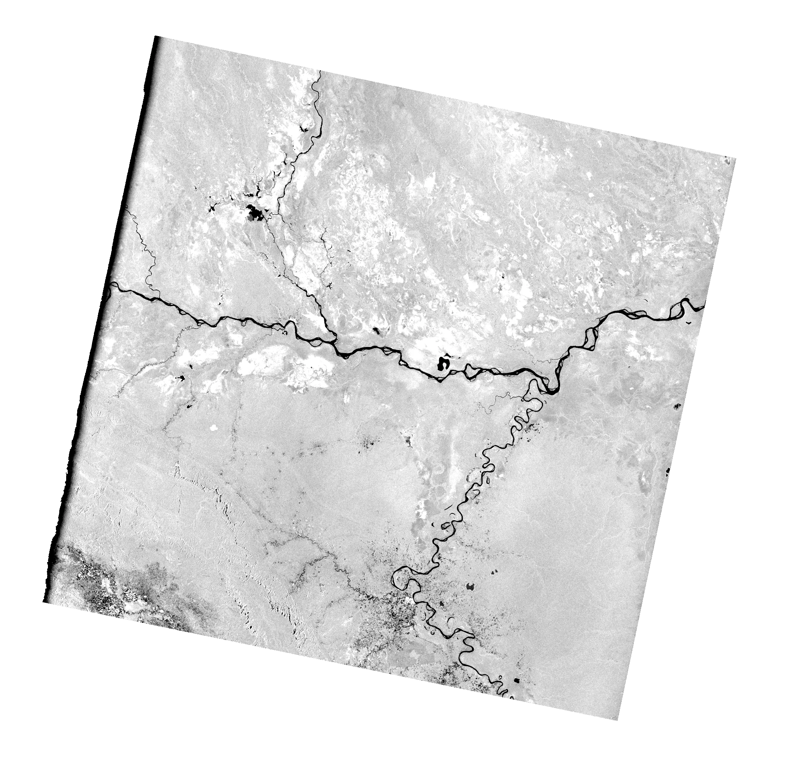
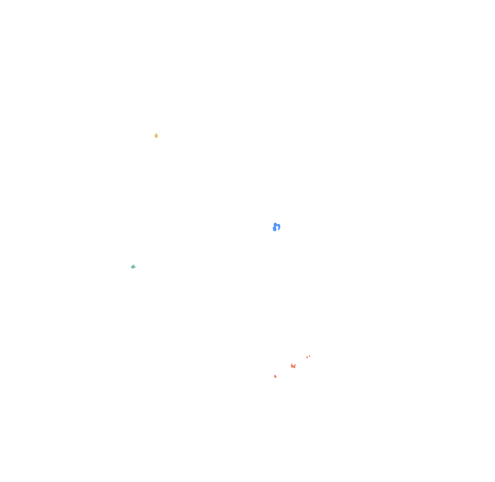
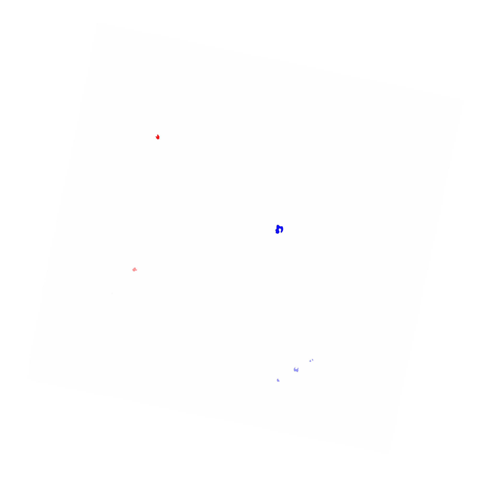
3. Cambios por clase
| Clase | km² | % del área | Zonas | km² en zonas | Lectura posible |
|---|---|---|---|---|---|
| Agua nueva | 17,32 | 0,029 | 1 | 17,31 | Superficie que pasa a reflejar como agua lisa: posible inundación o crecida. |
| Agua que desaparece | 4,92 | 0,008 | 1 | 4,95 | Superficie que deja de ser agua: retirada de una crecida o lago que mengua. |
| Descenso del eco | 11,79 | 0,020 | 7 | 11,02 | Menos retrodispersión: posible tala, cosecha o suelo más seco. |
| Aumento del eco | 5,37 | 0,009 | 1 | 5,25 | Más retrodispersión: vegetación que crece, estructuras o suelo más húmedo. |
Cambio medio +0,02 dB, desviación 0,47 dB. La mitad de los píxeles cambia menos de 0,2 dB, el 90 % menos de 0,6 dB y el 99 % menos de 0,9 dB.
4. Brillo de cada fecha y coberturas radar
Mediana antes -5,0 dB, después -4,0 dB. Lectura aproximada del brillo (no es un mapa de usos del suelo):
| Antes ↓ / Después → | Agua lisa | Superficie lisa o vegetación baja | Vegetación densa | Muy brillante | Total antes |
|---|---|---|---|---|---|
| Agua lisa | 671,7 | 83,7 | 4,7 | 0,0 | 760,1 |
| Superficie lisa o vegetación baja | 0,1 | 617,0 | 297,7 | 0,0 | 914,8 |
| Vegetación densa | 17,2 | 7,9 | 53 613,9 | 3 542,3 | 57 181,3 |
| Muy brillante | 0,1 | 0,0 | 0,2 | 1 453,4 | 1 453,7 |
| Total después | 689,1 | 708,6 | 53 916,5 | 4 995,7 |
| Agua lisa | Muy oscuro: el radar rebota lejos como en un espejo. Ríos, lagos, zonas inundadas sin vegetación. |
| Superficie lisa o vegetación baja | Oscuro: suelo desnudo, pastos, cultivos bajos, arena o carreteras. |
| Vegetación densa | Gris medio: bosque o cultivos altos; la banda L entra en la copa y rebota en las ramas. |
| Muy brillante | Muy claro: edificios, bosque inundado (doble rebote agua-tronco) o laderas de cara al radar. |
Balance de agua
Agua antes 760,1 km², después 689,1 km². Se mantiene 671,7 km², aparece 17,4 km² y desaparece 88,4 km².
5. Zonas de cambio (10)
| Zona | Clase | km² | Δ medio | Δ extremo | dB antes → después | % agua antes → después | Cobertura | Confianza | Lat, lon |
|---|---|---|---|---|---|---|---|---|---|
| z001 | Agua nueva | 17,31 | -17,7 | -20,7 | -4,9 → -21,6 | 0 → 100 | Vegetación densa → Agua lisa | alta | -4.9932, -75.9904 |
| z002 | Descenso del eco | 6,39 | -4,8 | -5,8 | -5,5 → -9,3 | 0 → 0 | Vegetación densa → Superficie lisa o vegetación baja | media | -5.8435, -75.8887 |
| z003 | Aumento del eco | 5,25 | +4,9 | +5,8 | -5,4 → 0,5 | 0 → 0 | Vegetación densa → Muy brillante | media | -5.2351, -76.8619 |
| z004 | Agua que desaparece | 4,95 | +9,5 | +11,1 | -18,5 → -8,0 | 99 → 0 | Agua lisa → Vegetación densa | alta | -4.4353, -76.7195 |
| z005 | Descenso del eco | 2,46 | -4,9 | -5,7 | -6,0 → -9,9 | 0 → 0 | Vegetación densa → Superficie lisa o vegetación baja | media | -5.9065, -75.9980 |
| z006 | Descenso del eco | 1,17 | -4,8 | -5,5 | -5,3 → -9,1 | 0 → 0 | Vegetación densa → Superficie lisa o vegetación baja | media | -5.7901, -75.8032 |
| z007 | Descenso del eco | 0,81 | -4,7 | -5,6 | -5,4 → -9,1 | 0 → 0 | Vegetación densa → Superficie lisa o vegetación baja | media | -5.7828, -75.7894 |
| z008 | Descenso del eco | 0,08 | -7,0 | -8,7 | -4,5 → -10,5 | 0 → 0 | Vegetación densa → Superficie lisa o vegetación baja | baja | -4.9798, -76.0056 |
| z009 | Descenso del eco | 0,05 | -6,9 | -11,4 | -4,5 → -10,3 | 0 → 12 | Vegetación densa → Superficie lisa o vegetación baja | baja | -4.9715, -75.9893 |
| z010 | Descenso del eco | 0,05 | -6,8 | -11,4 | -4,3 → -10,1 | 0 → 0 | Vegetación densa → Superficie lisa o vegetación baja | baja | -4.9918, -75.9793 |
Fichas de las zonas mayores (recortes a 20 m)
z001 · Agua nueva — 17,31 km², Δ -17,7 dB, confianza alta. Recorte de 10.2 km.
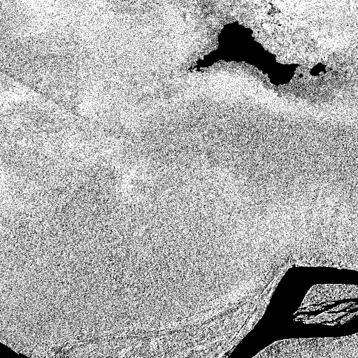
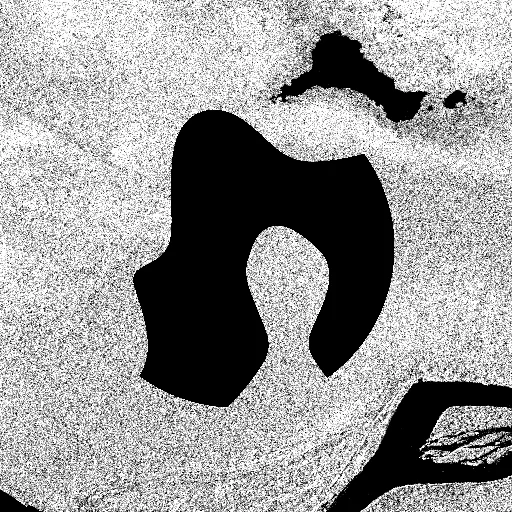
z002 · Descenso del eco — 6,39 km², Δ -4,8 dB, confianza media. Recorte de 10.2 km.
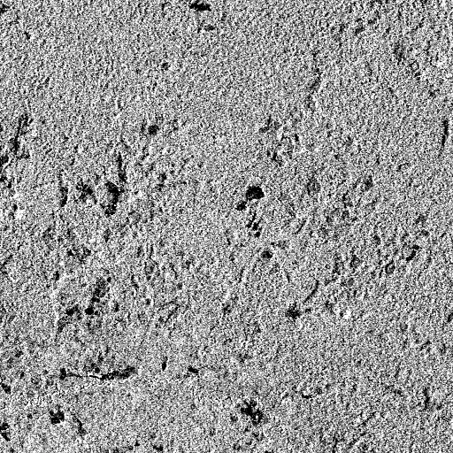
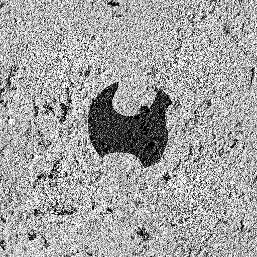
z003 · Aumento del eco — 5,25 km², Δ +4,9 dB, confianza media. Recorte de 10.2 km.
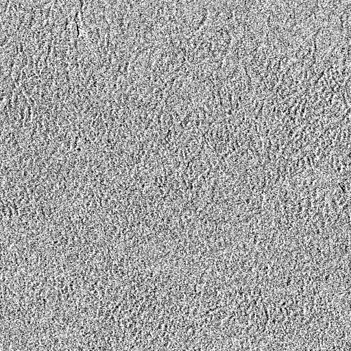
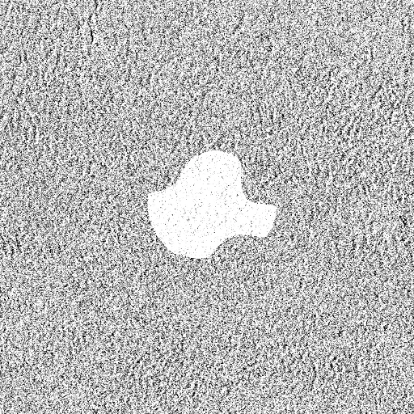
z004 · Agua que desaparece — 4,95 km², Δ +9,5 dB, confianza alta. Recorte de 10.2 km.
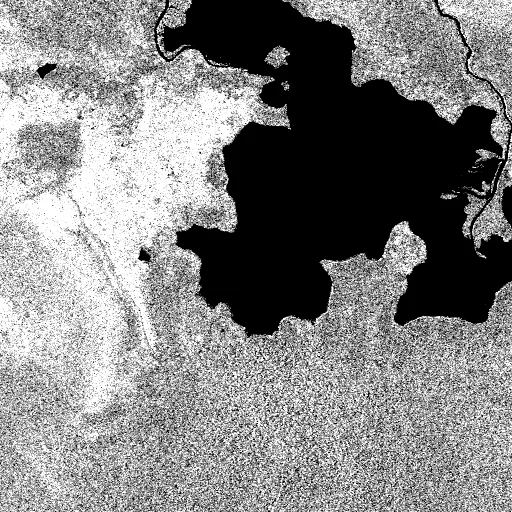
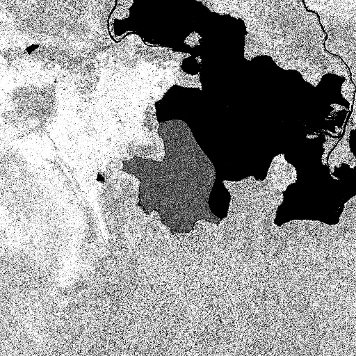
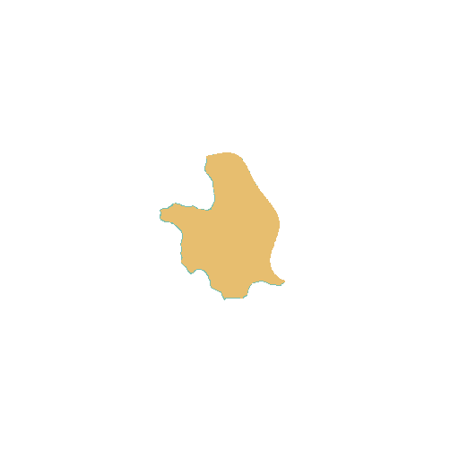
z005 · Descenso del eco — 2,46 km², Δ -4,9 dB, confianza media. Recorte de 10.2 km.
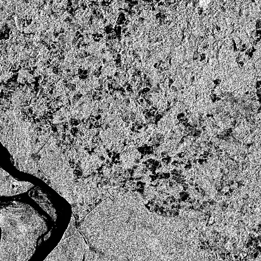
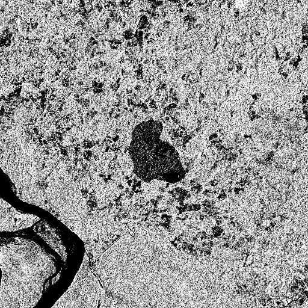
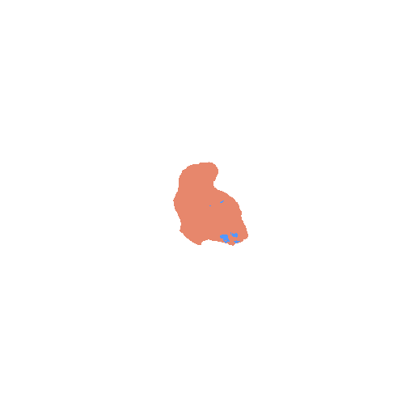
z006 · Descenso del eco — 1,17 km², Δ -4,8 dB, confianza media. Recorte de 10.2 km.
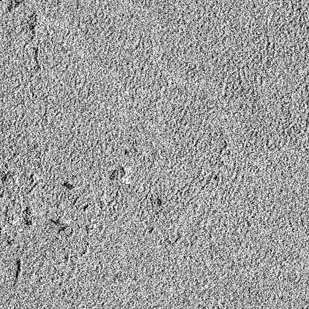
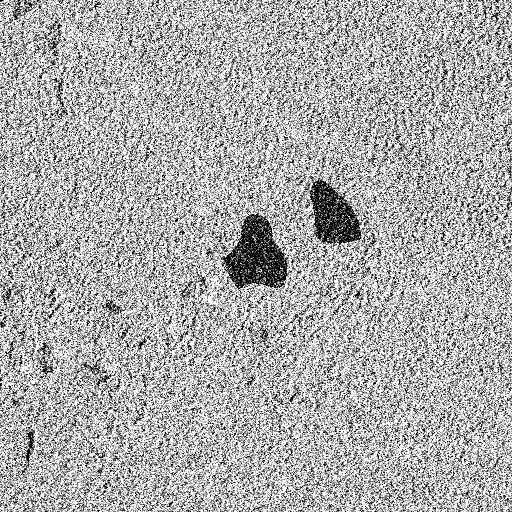
z007 · Descenso del eco — 0,81 km², Δ -4,7 dB, confianza media. Recorte de 10.2 km.
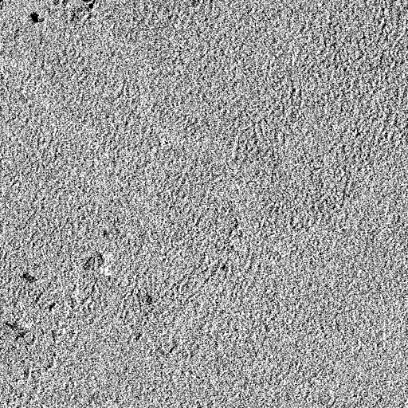
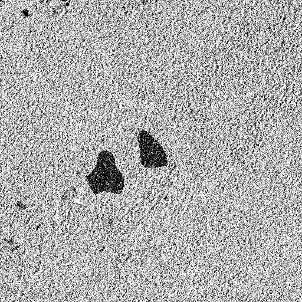
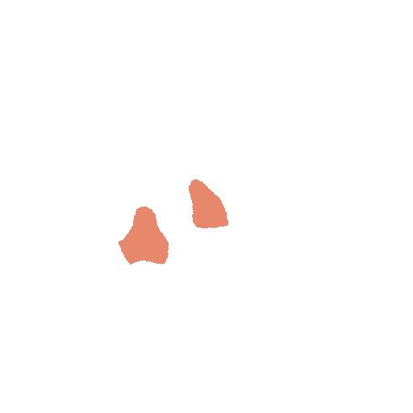
z008 · Descenso del eco — 0,08 km², Δ -7,0 dB, confianza baja. Recorte de 10.2 km.
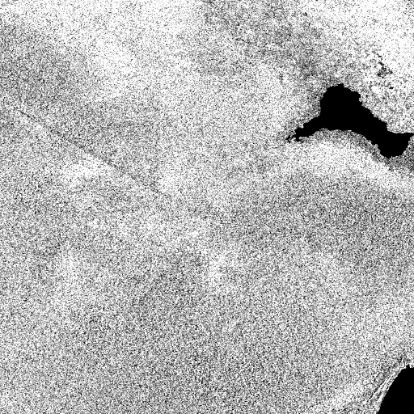
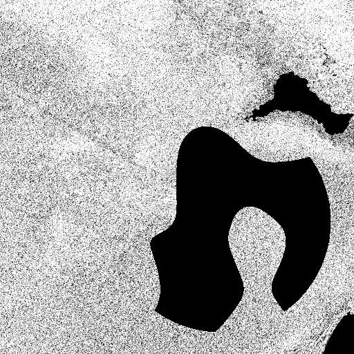
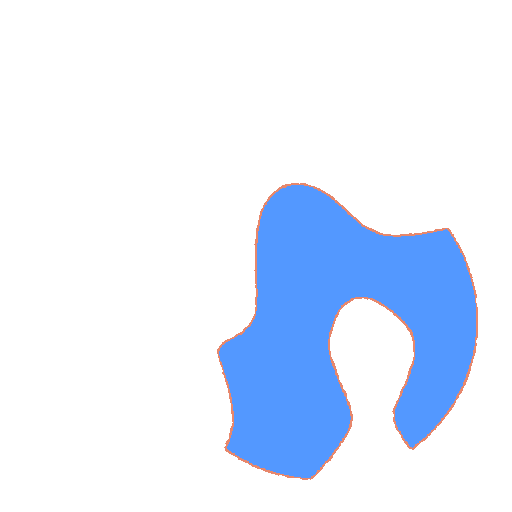
z009 · Descenso del eco — 0,05 km², Δ -6,9 dB, confianza baja. Recorte de 10.2 km.
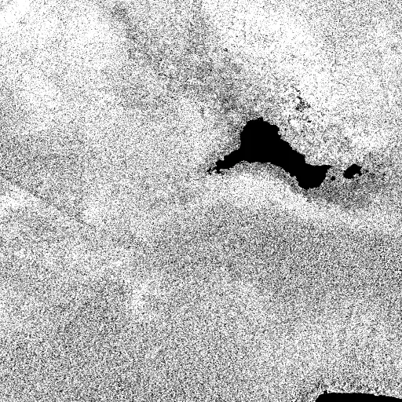
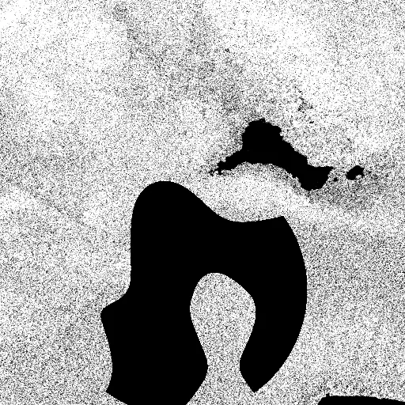
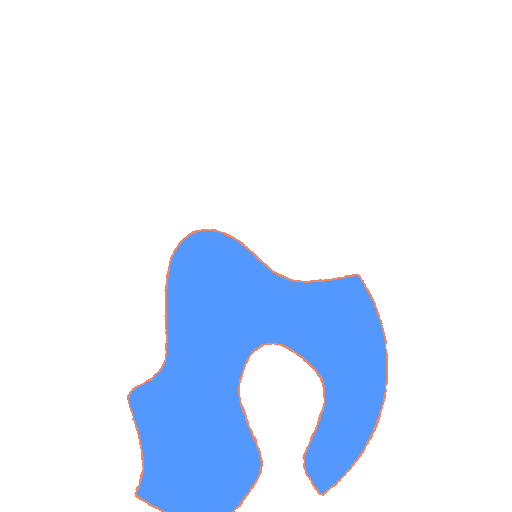
z010 · Descenso del eco — 0,05 km², Δ -6,8 dB, confianza baja. Recorte de 10.2 km.
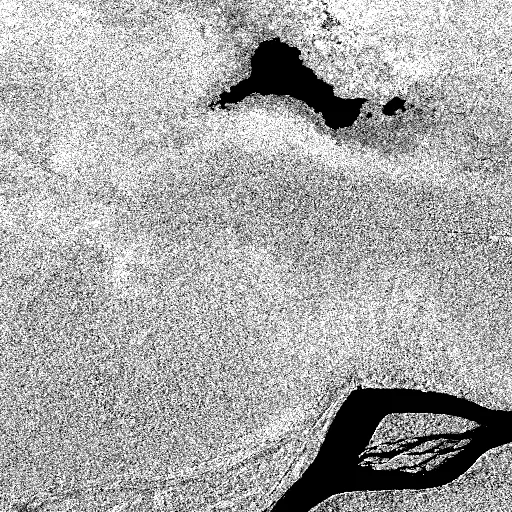
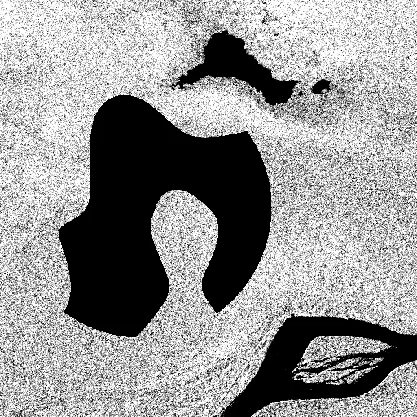
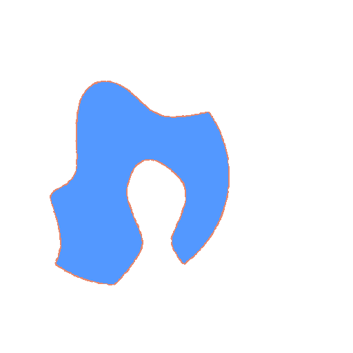
6. Escena y método
| Sensor | NISAR L-SAR (banda L), producto L2 GCOV, polarización HH |
|---|---|
| Pista / frame / órbita | 83 / 91 / Descending |
| Mirada del radar | Left |
| Polarizaciones (antes / después) | HHHH / HHHH |
| Gránulo antes | NISAR_L2_PR_GCOV_032_083_D_091_2005_SHSH_A_20261005T232338_20261005T232413_P05023_N_F_J_001.h5 |
| Gránulo después | SIMULADO a partir de NISAR_L2_PR_GCOV_032_083_D_091_2005_SHSH_A_20261005T232338_20261005T232413_P05023_N_F_J_001.h5 |
| Píxel / proyección | 20 m / EPSG:32718 |
| Extensión (lat, lon) | -6.5520, -77.6786 — -3.6041, -74.6577 |
| Generado | 2026-11-01T16:41:38Z |
- Filtro de speckle: media 5×5 en potencia lineal (unos 100 m), para quitar el granulado típico del radar.
- Diferencia píxel a píxel en dB: después − antes.
- Desplazamiento global (+1,03 dB): la mediana de la diferencia se resta, porque un cambio de humedad o calibración afecta a toda la escena y no es un cambio local.
- Clases: |Δ| > 3 dB. «Agua nueva» y «agua que desaparece» exigen además cruzar el umbral de agua (-15 dB).
- Zonas: clase dominante en bloques de 80 m, agrupada en manchas conexas de al menos 0.05 km².
- Confianza: alta si el área ≥ 0,5 km² y |Δ| ≥ 6 dB; media si el área ≥ 0,1 km² y |Δ| ≥ 3.75 dB; baja en el resto.
Límites
- Solo polarización HH. HV ayudaría a separar vegetación de suelo.
- Umbrales fijos: el de agua falla en desiertos y en agua con viento.
- Sin corrección de pendiente ni sombra: en montaña aparecen falsos cambios.
- Las imágenes se colocan en el mapa con su rectángulo lat/lon, sin reproyectar (error de pocos píxeles).
- Un cambio de radar es una señal, no una prueba: hay que contrastarlo con imagen óptica o sobre el terreno.
Generado con processing/nisar_informe.py · Datos NISAR: NASA/ISRO vía ASF DAAC · Prototipo, no es un sistema de alerta operativo.